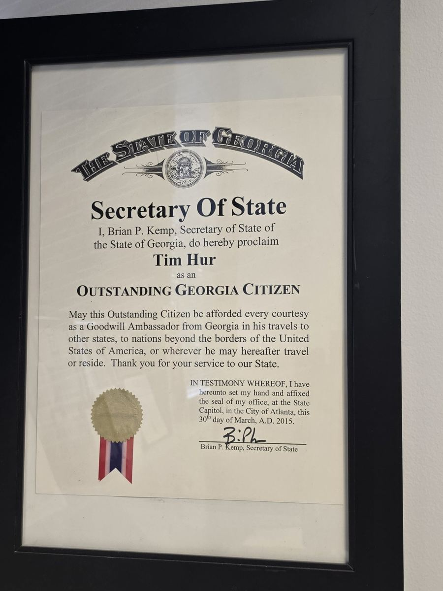

A message from Tim
About
Tim Hur has sold real estate in metro Atlanta since 2006 and founded Point Honors and Associates, Realtors, a Duluth-based brokerage, in 2010. His team works across residential, commercial and investment property in Gwinnett, Fulton and Cobb counties.
Born in Houston, Hur grew up in Gwinnett County, graduated from Parkview High School and earned a B.S. in industrial engineering, with a certificate in industrial and organizational psychology, from the Georgia Institute of Technology in 2005. After a year in residential sales, he worked in commercial and hospitality investment at Massell Commercial Real Estate (2007–2008) before opening his own firm. His Korean name is 허다일, and Korean-language media often refer to him as 팀 허. He speaks English and Korean, and his work has long focused on helping immigrant families, international buyers and first-time homeowners.
In 2022 he served as National President of the Asian Real Estate Association of America (AREAA), which then had about 17,000 members in 42 chapters. At 37 he was the association's second-youngest national president, its first openly gay national president, and the first Korean American from the Southeast to hold the office. He has held national roles with the National Association of Realtors, most recently as one of seven Realtor Party Community Engagement Liaisons nationwide in 2024, and earlier as 2018 chair of its Diversity Committee, and from 2016 to 2018 worked for Better Homes and Gardens Real Estate, first as Director of New Growth Markets and then as Director of Inclusion and Philanthropy.
Hur writes and speaks on housing affordability, fair housing and AANHPI homeownership, and has been quoted in The Wall Street Journal and Forbes.
Career and service
- 2006
Began selling residential real estate in metro Atlanta after graduating from Georgia Tech.
- 2007
Joined Massell Commercial Real Estate as a hospitality and foreign investment agent (2007–2008). Delegation member on the Metro Atlanta Chamber's East Asia tour with Mayor Shirley Franklin.
- 2009
Delegation member for the inaugural sister-city celebration between Gwinnett County and Gangnam-gu, Seoul.
- 2010
Founded Point Honors and Associates, Realtors.
Founding charter member of the Gwinnett Mosaic Rotary Club. Joined the board of the Gwinnett Place Community Improvement District. Graduate of the Atlanta Regional Commission's Regional Leadership Institute.
Named one of Georgia's Most Influential Asian Americans by Georgia Asian Times, an honor repeated every year through 2015.
- 2011
Named to Gwinnett's Top 35 Under 35.
- 2012
LEAD Atlanta, class of 2012. Co-chair of the Georgia AAPI Legislative Day (2012–2014).
Elected president of the AREAA Atlanta chapter, serving through early 2015.
- 2013
NAR President's Liaison to South Korea for three consecutive NAR presidents (2013–2015), and chair of NAR's State and Local Forum on Global Business.
Appointed to the Gwinnett County Public Schools Foundation board, its first Korean American trustee. Leadership Gwinnett, class of 2013.
- 2014
Democratic candidate for the Georgia House of Representatives, District 105. Co-chair of the Georgia Democratic Party's AAPI caucus.
AREAA National Policy Chair. Graduate of the NAR Leadership Academy and the APAICS National Leadership Academy; named to NAR's presidential advisory group on the Realtor of the future.
- 2015
Named an Outstanding Georgia Citizen by the Georgia Secretary of State.
President of the Gwinnett Mosaic Rotary Club (2015–2016). NetKAL fellow, USC Class IX. Chair of the Georgia Association of Realtors' Equal Opportunity and Cultural Diversity committee.
- 2016
Joined Better Homes and Gardens Real Estate as Director of New Growth Markets, then served as Director of Inclusion and Philanthropy (2017–2018).
Region 3 Director, Georgia Association of Realtors (2016–2018). AREAA National Member Services Chair. Named to the Hillary for America AAPI Leadership Council.
- 2018
Chair of NAR's Diversity Committee and member of the NAR board of directors; one of ten members of NAR's committee marking the 50th anniversary of the Fair Housing Act.
AREAA National Treasurer and Secretary. Chair of Membership Engagement, Atlanta Realtors. Georgia Trend 40 Under 40.
- 2019
Elected AREAA's 2022 National President.
- 2022
National President of AREAA. Led the association's Diversity and Fair Housing Summit in Washington, D.C., where he appeared with House Financial Services Committee Chair Maxine Waters.
Atlanta Business Chronicle 40 Under 40.
- 2024
One of seven NAR Realtor Party Community Engagement Liaisons representing Realtors nationwide.
His team ranked No. 1 by sales volume with the Atlanta Realtors Association.
Testified before the Georgia House Agriculture and Consumer Affairs Committee on proposed limits on land ownership by foreign nationals.
- 2026
His team ranked seventh nationally by transactions on the AREAA A-List.
Advocacy
Homeownership and fair housing
As AREAA president, Hur pressed for housing affordability, expanded down payment assistance, fair housing protections, better data on Asian American, Native Hawaiian and Pacific Islander (AANHPI) homebuyers, and credit scoring that counts rental payment history. AREAA also pushed for mortgage applications to record a borrower's preferred language; in May 2022 the Federal Housing Finance Agency required lenders to use a form offering that option starting in 2023.
Property rights for immigrant families
In 2023 and 2024 he spoke against Georgia bills that would have restricted property purchases by nationals of certain countries, warning that they invited discrimination against Asian American buyers. Watch his February 9, 2024 testimony to the Georgia House.
The value of buyer representation
After the 2024 NAR commission settlement, he wrote in Fortune and RISMedia that buyers would still need professional representation. NAR's own news service highlighted the Fortune piece as an example of Realtors speaking up for their profession.
In the news
News coverage
- The Wall Street JournalJune 24, 2025More homeowners find themselves underwater
- ForbesJuly 31, 2025For buyers, the U.S. housing market is better than it's been in years
- R Street InstituteAugust 18, 2025Georgia housing market may be nearing tipping point
- 11AliveApril 3, 2024Bill looking to set restrictions on who can own land in Georgia still up in the air
- Atlanta Civic CircleMarch 15, 2023Georgia House weighs bill to restrict land ownership for immigrants (also in Global Atlanta)
- Atlanta Business ChronicleNovember 1, 202240 Under 40: the 2022 class
- RISMediaJanuary 26, 2022Video interview: bridging the diversity gap for Asian American homebuyers
- RISMediaOctober 18, 2021Tim Hur named AREAA 2022 National President
- Real Estate Agent MagazineOctober 14, 2021Atlanta Realtor named president of AREAA
- Korea DailyOctober 15, 2021미국아시안부동산협회장에 한인 팀 허
- Korea Times Atlanta2021팀 허, 아시안부동산협회장에 취임
- Korea Times Atlanta2019미국 아시안부동산협회장에 허다일씨 선출
- Georgia TrendOctober 1, 2018Georgia Trend's 2018 40 Under 40
- Atlanta JoongAng2018팀 허 부동산 전문인, '40세 이하 젊은 리더'에 뽑혀
- News and PostJuly 2, 2015귀넷모자이크 로터리클럽 회장에 허다일씨
- StatelineOctober 3, 2014How Asian Americans are changing the South
- WSB-TVMay 1, 2014Gwinnett voters upset over alleged racially insensitive robo call
- Georgia Asian Times20152015 Most Influential Asian Americans in Georgia
- Atlanta Business ChronicleNovember 15, 2013Hur helps international businesses feel at home
- News and PostSeptember 4, 2013팀 허, 귀넷공립고재단에 이사로 임명
- Korea DailyDecember 14, 201220대 한인이 부동산 협회장
Profiles, interviews and features
- a|r|e magazine (AREAA)Winter 2025Tim Hur: Perseverance in Leadership
- REALTOR News (NAR)June 6, 2024Realtors come together to "tell our story"
- a|r|e magazine (AREAA)Fall 2022, coverLooking back with Tim Hur
- a|r|e magazine (AREAA)Fall 2021Q&A with Amy Kong and Tim Hur
- The Real Estate SessionsFebruary 9, 2021Podcast episode 270: Tim Hur
- Interiors Atlanta (Modern Luxury)Spring 2019Real Estate Awards winner profile: Expert in Midtown and Beloved Bilingual
- The Atlantan (Modern Luxury)September 2018Modern Luxury Q&A with Tim Hur
- Atlanta Agent Magazine2018Who's Who in Atlanta Real Estate
- Gwinnett Business RadioNovember 20, 2014Interview with Tim Hur
- Atlanta Agent MagazineSeptember 29, 2014Agent Snapshot: Tim Hur

Video
- YouTubeOngoingWine About Real Estate A show Tim co-hosts with his team partner Helen Pham: real estate questions, life in the business, and a new bottle each episode.
- Georgia House of RepresentativesFebruary 9, 2024Testimony to the Agriculture and Consumer Affairs Committee
Writing
- RISMediaApril 5, 2024Cooperative compensation will continue to be an important option for consumers
- FortuneApril 3, 2024Homebuyers will still need real estate agents after the NAR settlement
- RISMediaOctober 13, 2022The paradox of the AAPI homebuying process
- Chicago Agent MagazineApril 4, 2022AREAA: fostering progress through greater accessibility
- InmanOpinion columns on Inman
Recognition
Personal
- Atlanta Business Chronicle 40 Under 40, 2022
- Georgia Trend 40 Under 40, 2018
- Outstanding Georgia Citizen, Georgia Secretary of State, 2015
- Georgia's Most Influential Asian Americans, Georgia Asian Times, 2010–2015
- Gwinnett's People to Know, 2013
- Gwinnett Top 35 Under 35, Gwinnett Business Journal and Gwinnett Chamber Young Professionals, 2011
- Interiors Atlanta (Modern Luxury) Real Estate Awards, 2019: top five, Expert in Midtown and Beloved Bilingual
- Kentucky Colonel, 2013
- NAR RPAC Hall of Fame
With the Tim & Helen team at Point Honors
- No. 1 team by sales volume, Atlanta Realtors Association, 2024
- AREAA A-List of top national producers: 7th by transactions in 2026, and on the list in prior years
- Top 3% of agents in metro Atlanta, Georgia MLS, 2025
- Best of Gwinnett, every year 2020–2025
- Best of Georgia, Georgia Business Journal, 2023 and 2024 (2025 honorable mention)
- The Atlantan / RealTrends Leading 100 top producing teams, 2019
- RealTrends Verified; NAMAR Million Dollar Club every year since 2020
- Point Honors named an Outstanding Georgia Business by the Georgia Secretary of State, 2015

Designations
Certified Residential Specialist (CRS), Certified International Property Specialist (CIPS), Accredited Buyer's Representative (ABR), Seller Representative Specialist (SRS), Certified Luxury Home Marketing Specialist (CLHMS) with Million Dollar Guild recognition, NAR GREEN, At Home With Diversity (AHWD) and C2EX.
On Instagram
Latest from @timhur7
Contact
For buying, selling, property management or investment questions, reach Tim at Point Honors and Associates, Realtors. For speaking and media requests, email him directly.
Point Honors and Associates, Realtors
3575 Koger Blvd., Suite 125, Duluth, GA 30096
pointhonors.com Tim & Helen team reviews on Google